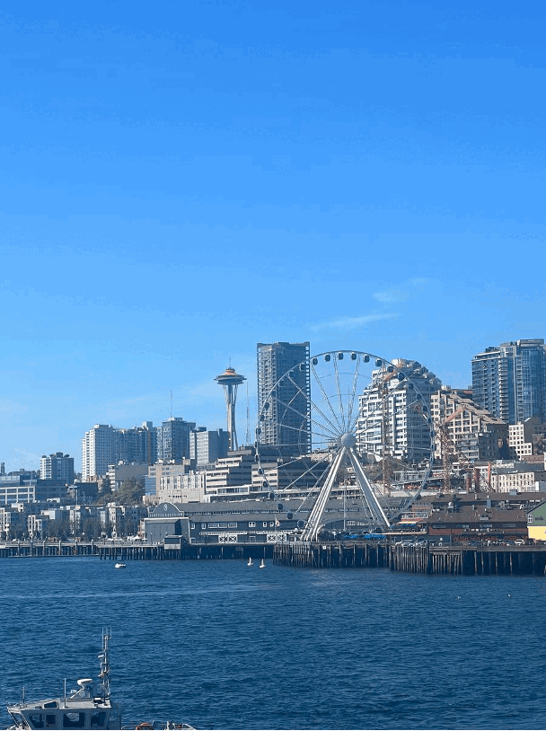
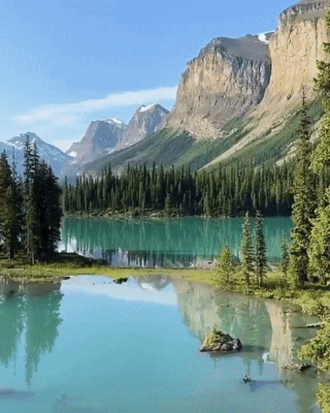
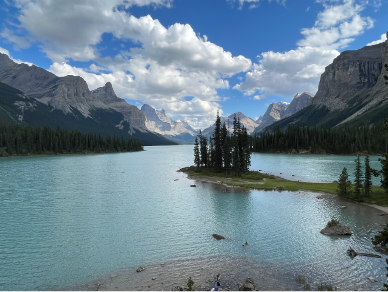

Sofia, Bulgaria


Geographical Location: Europe
Sofia is the capital city of Bulgaria, a country located in Eastern Europe. It is part of the European Union and the primary language spoken is Bulgarian. The city’s population is around 1.3 million. In addition to its urban structures, Sofia also contains a mountain peak called “Vitosha”.
Vitosha is located 30 minutes from the capital’s center, and can be reached by foot, car, and by lift. The peak has an elevation of 7,520 feet and during the summer months the average temperature is around 64 degrees fahrenheit. This makes it a great sight for any type of traveler who seeks the outdoors.
Photo Gallery


Paris, France


Geographical Location: Europe
Paris is one of the oldest cities in Europe and the city of romance. With a vast amount of cultural history, lined with iconic landmarks, intimate scenes, and world-renowned art museums.
Paris welcomes millions of visitors annually, each drawn to its exquisite charm and beautiful ambiance. Enjoy tasty treats and exquisite cuisine await, while city landmarks illuminate the night sky.
Photo Gallery


Seattle, Washingtone

Geographical Location: North America
Seattle, Washington is located in the United States on the North American continent. Seattle is broken up into neighborhoods, some being Capitol Hill, Pioneer Square and Queen Anne. Nearby suburbs include Mercer Island, Bellevue and Kirkland, located approximately 15-20 minutes from Seattle.
The University of Washington is located in Seattle. There is an undergraduate and a graduate program within the University and it is known for its pristine academics. U of W is located in the Northern part of Seattle.
Photo Gallery


Jasper, Canada
 Geographical Location: North America
Spirit island, located in the heart of Maligne Lake, Jasper was a spiritual place of healing for the rocky mountain tribe for over 2000 years before they were displaced in the 1900s. They believed that each mountain with a face in the hall of the gods(the mountains in front of spirit island) contains the essence of each god of each religion as well as all notable rocky mountain tribesmen.
In 2020, there was a forest fire in a nearby forest region of Lake Maligne. Because of that forest fire, the few remaining tribe members from that same rocky mountain tribe approached the Canadian government to get access to Spirit Island away since they believe that the forest fire was a punishment by their gods for being away from their spiritual home for so long. Now, the rocky mountain tribe works with the Canadian government to perform their spiritual healing once a year.
Photo Gallery